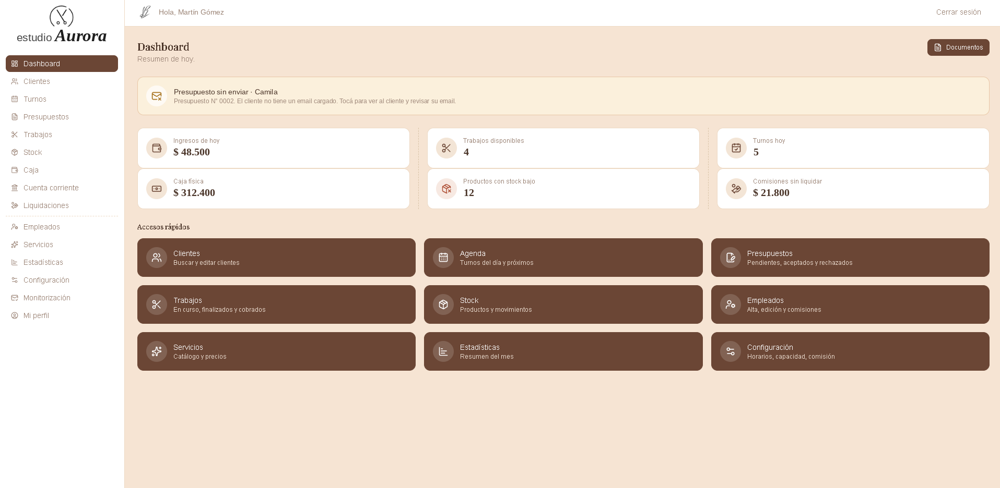
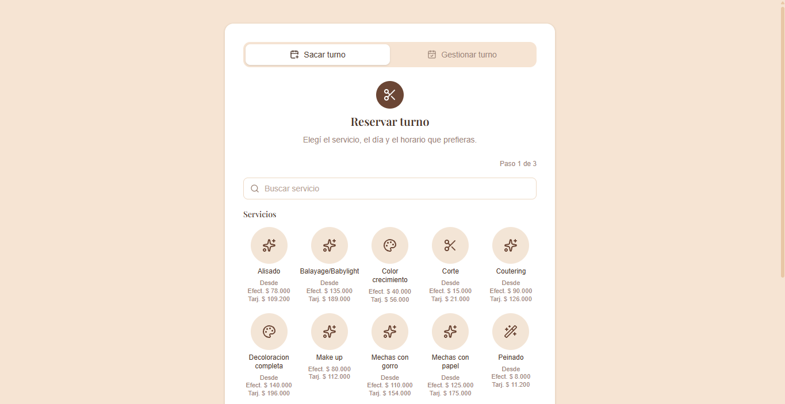
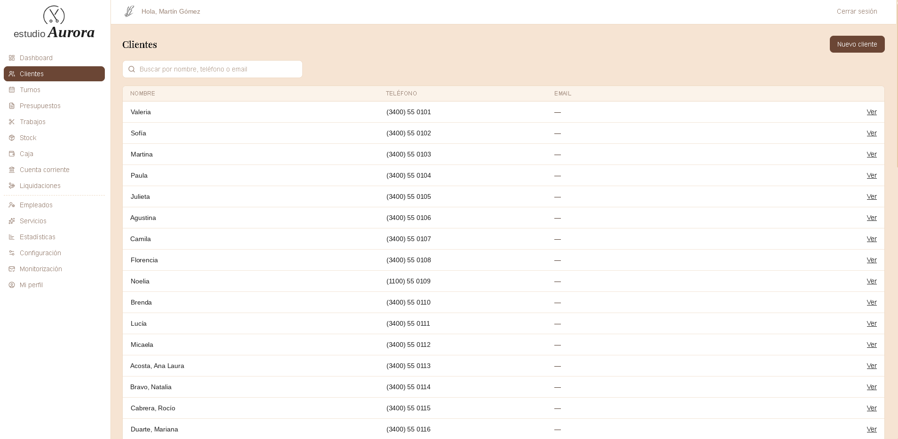
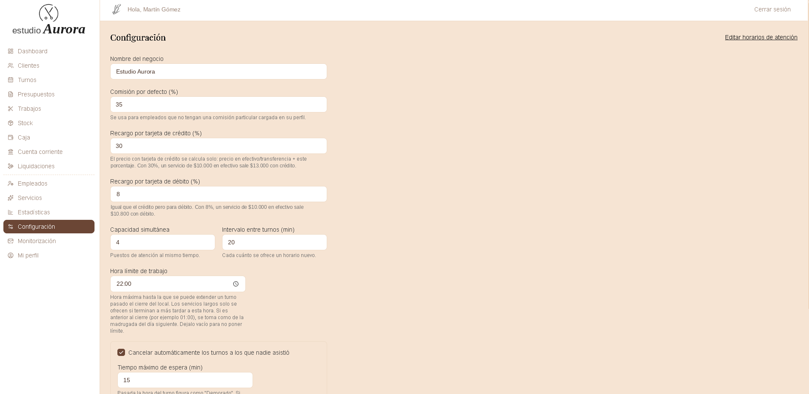

Turnos online
Consulta y solicitud de turnos, agenda diaria y seguimiento de reservas.
Plataforma web pensada para organizar el día a día de una peluquería: turnos, clientes, servicios, equipo de trabajo y administración del negocio desde un único lugar.

01 — DESCRIPCIÓN
El sistema está orientado a centralizar la administración de una peluquería y simplificar las tareas cotidianas del personal.
La plataforma combina una experiencia pública para que los clientes puedan consultar servicios y solicitar turnos con un área privada desde la que se administra la agenda y la operación del negocio.
La estructura contempla la gestión de clientes, fichas e historial, servicios, empleados, caja y stock, con acceso a las herramientas según el rol de cada usuario.
02 — FUNCIONALIDADES
Consulta y solicitud de turnos, agenda diaria y seguimiento de reservas.
Registro de clientes con sus datos y acceso rápido a la información relevante.
Historial de visitas y servicios para mantener organizada la atención.
Administración de servicios ofrecidos, categorías y precios.
Organización del equipo y asociación de turnos con cada profesional.
Registro de ingresos y egresos para el control económico del negocio.
Control de productos e insumos utilizados en el trabajo diario.
Área privada para centralizar la operación y mantener protegida la información.
03 — GALERÍA



04 — TECNOLOGÍAS
05 — ARQUITECTURA
React + TypeScript
Supabase + autenticación
PostgreSQL
06 — RESULTADO
La propuesta reúne en una plataforma los procesos principales de una peluquería, evitando tener la agenda, los clientes y la administración repartidos entre herramientas diferentes.
El resultado es una base de gestión clara y ampliable, enfocada en mejorar la organización del equipo y la experiencia de los clientes.
¿VEMOS TU IDEA?
Desarrollo soluciones digitales adaptadas a las necesidades de cada negocio.